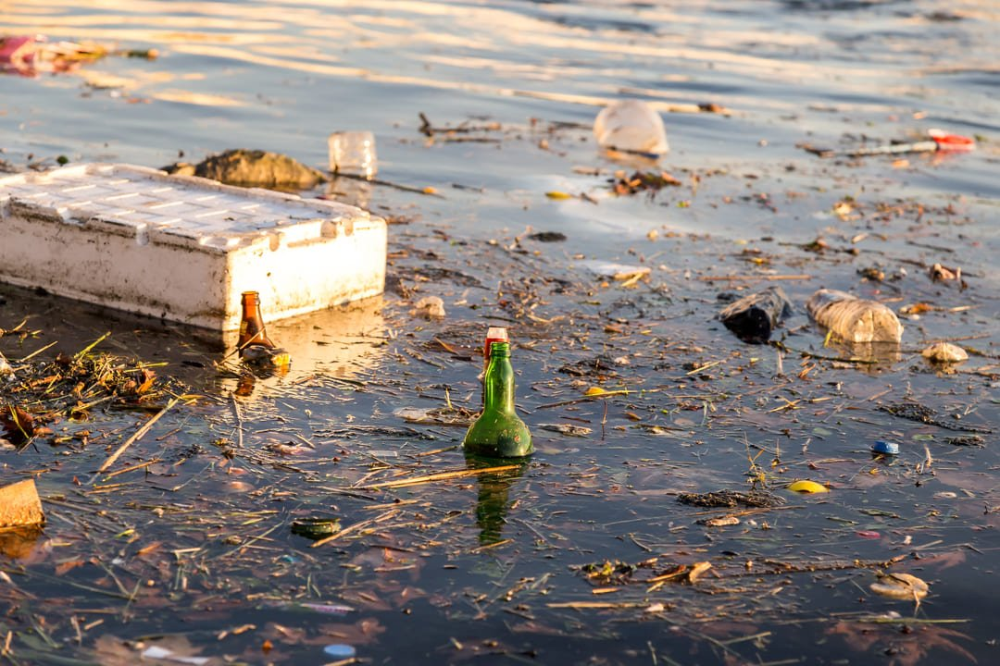
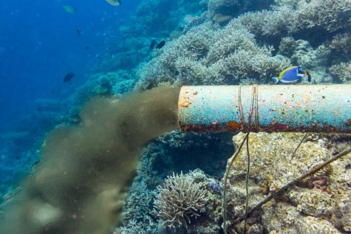
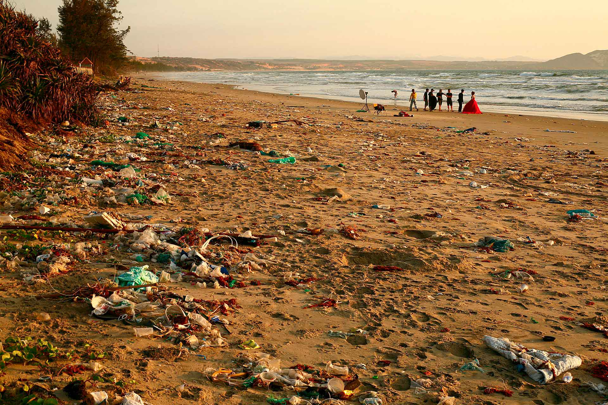
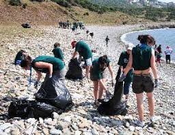

¿En que afecta?
La contaminacion marina afecta a los mares y oceanos,desde la zona de rompientes hatsa el mar abierto. Incluye lo que se produce en las costas, en los puertos,en las plataformas posqueras, en la indsutria, en la navegacion y en las zonas maritimas.
Son las actividades humanas, que incluyen el vertido de basura plastica, las descargas de aguas residuales y desechos industriales, la escorrienta agricola con fetilizantes y pasticidas, los derrames de petroleo y el trafico maritimo.
La contaminacion en el mar es alarmante, con cifras como mas de 17 millones de toneladas segun BBV y RTS. Se estima entre 1,15 millones y 12.5 millones de toneladas de plastico ingresana a los oceanos cada año y los microplasticos ya estan presentes en el lecho marino y en la cadena alimentaria. Esta Contaminacion se debe principalmente a plasticos, pero tambien a otros contaminantes


1 Utiliza menos productos de plastico. 2 Haz compras sostenibles de productos de mar. 3 Usa productos biodegradables en las playas. 4 No tires basura en las playas. 5 Viaja por el mar responsablemente. 6 Especializate en el area ambiental.
